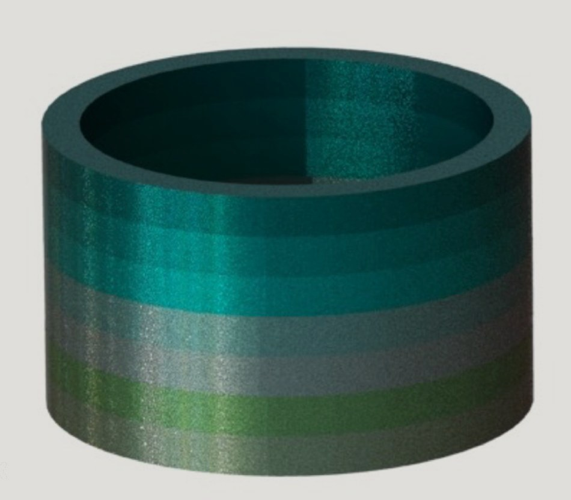

Graded NiTi printed in one LPBF build
I change the alloy’s composition up the height of a part during the build, so one piece carries several transformation temperatures and no joint.

Additive Manufacturing2026
First author, with Dr. Alaa Elwany
A printed NiTi hand that closes finger by finger
One graded piece in a warming water bath. Each finger sits in its own composition band, so the fingers close one after another.
- Material
NiTi, graded in one build
- Paper
Additive Manufacturing, 2026
NiTi sealing rings for Los Alamos
A ring that tightens as it warms, for radioactive material containment. It passed qualification on the first attempt; the paper is with Materials & Design.
- Expand
Below the martensite start temperature, the ring is stretched open.
- Engage
It slides over the two tube ends.
- Lock
Past the austenite finish temperature it recovers and grips the aluminium tubes.
